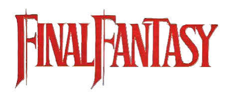

Un universo de aventuras
Final Fantasy Fan Page
Un punto de encuentro digital dedicado a la icónica franquicia de videojuegos de Square Enix.
Explorar los juegosInformación
Esta página está pensada para compartir información y contenido con otros fans de Final Fantasy.
- Enciclopedias y bases de datos
- Noticias y novedades
- Guías para tus aventuras
